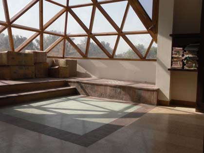

— Intermission —
Over a cuppa

A common reaction to these 'lectures' is that they are unlike any my listeners heard in school or college. At which I blurt out that, at least in all of India north of the Narbada, this is the common reaction to anyone saying anything mathematical in any manner.
The unfortunate fact quite simply is that the "mathematics" which is being taught, learnt and done in our schools, colleges and even universities, is as close to mathematics as Johnny Walker's "chan-chen chin-chon-chun" is to Chinese! The tail constantly wags the dog in these parts, and the baby gets thrown out with the bathwater every day: "mathematics" means monotonously memorizing methods for mindlessly doing the stereotyped questions in that looming examination at the tail-end of the year, and reasoning — such a waste of precious time! — finds no place in this inane and often panic-stricken drill.
Mathematics is all about formulating and trying to reason out solutions of clearly stated logical problems.
Crosswords, chess or bridge problems, and sudokus qualify — and some fine mathematics is indeed tied closely to games — but more attention is rightly paid to logical issues and problems that have arisen from our attempts to understand more basic things like space, time, and motion. To my students confused about this word, I always used to say: 'proof' simply means 'the reasons why' and you all know what that means!
For example, when someone asks "why are you carrying an umbrella?" you go "because it was raining earlier" if that happens to be your reason, it's that simple! You have to do exactly the same, no less no more, that is, just clearly give your reasons in simple everyday language, if you want to fully answer any question in this subject; but another way: there are only 'proof questions' in mathematics, none other!
A picture is worth a thousand words!
In tackling learning and doing mathematics. Indeed, via just four motifs and some quickly-drawn related sketches, I've conveyed to you, in next to no time and without any jargon, essentially complete proofs of some very famous results of mathematics.
Mathematics is never a spectator sport, one has to do some mental work of one's own even to 'see' already-done mathematics. Were my motifs merely making statements they would have demanded much less, but this was not my intention, and non-trivial effort is sometimes needed to understand even some points of an argument which are labelled 'obvious,' 'clear,' or 'trivial.' These 'trivial' gaps are inevitable in almost any argument of a readable length, and until and unless these missing steps also become clear to you, you obviously have not grasped the argument.
Yes, reasoning correctly is the same as redefining things — if 'things' means finite sets of statements and 'redefining' addition or deletion at each step of a statement which follows trivially from the others — but mathematics is more: it is the art of redefining things, for example, euclidean geometry is a never-ending logical thumri on just one non self-evident statement, the fifth postulate!
To really appreciate mathematics, one has to 'do' mathematics.
If you are game, you can start trying today, and no prerequisites are needed, for, there are all sorts of logical problems, more natural than crosswords and sudokus, so more typical of what mathematicians prefer to think about, which can be found aplenty, and at all levels, from the internet or elsewhere.
If you are the sort who doesn't give up easily, then pretty soon will come the day when you'll be able to tell the world of one which was, oh! so innocent-looking, yet led you such a long and merry dance, before it finally revealed its secret, but not before you had a rather inspired idea of your very own! Then, and only then, shall ye know why, to those who are intensely involved in mathematics, its beauty is palpable!
Don't do maths 'seriously': it's only a game!After J. L. Synge: "the human mind is at its best when playing".
A mathematician at his most creative is like a child 'in the zone' with his video-game: as J. L. Synge has suggested, "the human mind is at its best when playing"! So this its-only-a-game approach may, just may, increase your chances of solving that problem. Besides, it has the extra bonus of softening the disappointment of failure, which — let's face it — is always a distinct possibility whenever we do anything worth doing.
Pertinent too perhaps is the fact that, mathematics is a game — just like say "dots and squares" (which shall occur in a motif below) but with more symbols and moves — in the precise sense that mathematical statements can be written (though often very cumbersomely) as sentences of a purely symbolic language, and mathematical proofs can be written as finite (but usually extremely long: it would take reams of paper to actually write out some very simple arguments this way) sequences of these symbolic sentences, each produced from the sentence preceding it by one of a handful of prescribed moves.
Ready to rejoin the tour?